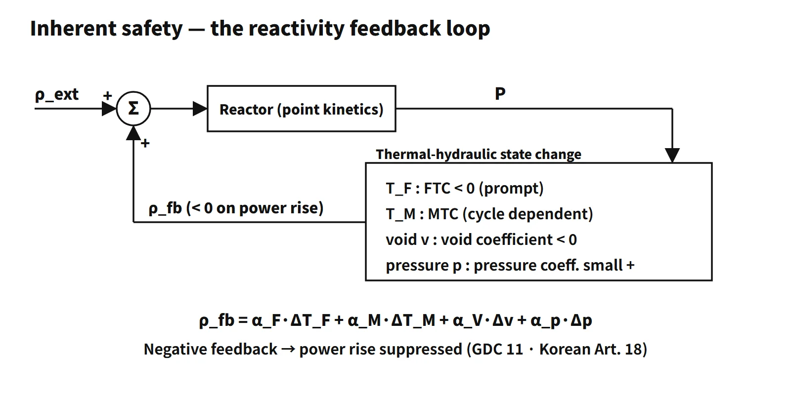

Reactor Physics & Kinetics · C-RX-015
Inherent Safety — Removing Hazards by Design Choice, and Where Passive Safety Begins
Safety that comes from removing hazards by design, centred on prompt negative reactivity feedback, and how it differs from passive safety systems.
Inherent safety is safety achieved by eliminating or excluding inherent hazards through the choice of the basic design concept and materials (IAEA-TECDOC-626). In a reactor core its representative characteristic is prompt negative reactivity feedback, which suppresses a power excursion by physics alone, with no signal, power supply or operator action.
TECDOC-626 lists the hazards as (1) fission products and decay heat, (2) excess reactivity and power excursions, and (3) the energy of high temperature, high pressure and exothermic chemical reactions. Only if all three are eliminated could a whole plant be called "inherently safe". For real plants, the correct usage is therefore per hazard, as in "the inherent safety characteristic of a negative power coefficient".
Principle and mechanism
Core characteristics that contribute to inherent safety
(1) Four reactivity coefficients. The net feedback reactivity is written as:
- ρfb = αF·ΔTF + αM·ΔTM + αV·Δv + αp·Δp
- αF, fuel temperature coefficient (FTC, Doppler): negative in low-enriched LWRs and a prompt feedback that responds immediately to fuel heating; −1 to −2 pcm/°F in a large PWR.
- αM, moderator temperature coefficient (MTC): varies with boron concentration, burnup and operating state, from near zero at BOC (possibly positive) to −30 to −45 pcm/°F at EOC; it lags by the fuel-to-coolant heat transfer.
- αV, void coefficient (v is the void fraction): negative in under-moderated LWRs. Small in a PWR, where only local boiling occurs; the main feedback in a BWR.
- αp, pressure coefficient: in a PWR, higher pressure raises density and moderation, giving a small positive value of minor practical effect. In a BWR the path by which pressure collapses voids is large and has to be treated separately. Do not count the same effect (such as void collapse) twice.
The power coefficient, which combines them on a power basis, is designed to be negative over the whole power operating range.
(2) Under-moderated design. The moderator-to-fuel ratio is set below the optimum, so that when the coolant heats up or boils and its density falls, moderation becomes insufficient and k decreases.
(3) Thermal inertia and low power density. A large coolant inventory and heat capacity slow the temperature rise in transients and give the operators grace time. The average PWR core power density is about 100 kW/L; modular high-temperature gas-cooled reactors lower it to a few kW/L so that decay heat can be removed by conduction and radiation alone.
(4) A layout that allows natural circulation. Placing the heat sink (steam generator) above the heat source (core) lets decay heat be removed even after the pumps are lost. The layout choice is an inherent characteristic; a system that uses it is a passive system.
How feedback holds power
Total reactivity is ρtotal = ρext + ρfb; when power rises, ρfb < 0 and trims the disturbance. A training one-group point-kinetics calculation for a +100 pcm (about 0.15 $) step inserted at rated power (β = 0.0065, λ = 0.08 s⁻¹, Λ = 2×10⁻⁵ s):
- No feedback: after a prompt jump to 1.19 times, power keeps rising with the asymptotic period T = (β − ρ)/(λρ) ≈ 69 s, reaching about 2.83 times after 60 s.
- Fuel feedback only (effective power feedback −10 pcm/%, first-order lag with a 5 s fuel thermal time constant): power peaks at about 1.16 times at 0.5 s and settles at about 1.10 times. In this model the new equilibrium is where the feedback reactivity cancels the inserted reactivity, ΔP = 100/10 = 10 %.
- −10 pcm/% is an effective gain (FTC × fuel temperature rise per unit power), not the FTC itself. Real transients can oscillate or take another path, so the correct statement is "tends to suppress a rapid reactivity increase", not "always reaches equilibrium".
![Left: block diagram of the reactivity feedback loop, an external reactivity entering a summing point, point kinetics producing power P, and four feedback paths through fuel temperature (FTC, negative and prompt), moderator temperature (MTC, cycle dependent), void fraction (void coefficient, negative) and pressure (pressure coefficient, small positive in a PWR) returning rho fb. Right: relative power after a +100 pcm step, rising to 2.83 times at 60 s without feedback and settling at 1.10 times with an effective power feedback of −10 pcm per %. Below: the feedback equation, a fuel-rod image and a card on feedback time scales](../../assets/images/concepts/c-rx-015-inherent-safety/fig1-feedback-loop-kinetics.webp)
Delayed neutrons give feedback time to act, but they are better classed as the physical basis of controllability than as an inherent safety "characteristic".
The boundary with passive safety (TECDOC-626 categories)
A passive system is either composed entirely of passive components and structures, or uses active components only in a very limited way to initiate subsequent passive operation. It performs its function with natural phenomena such as gravity, natural circulation and accumulated pressure, and with internally stored energy. There are four categories; A → D is the degree of passivity, not a safety ranking. Classification includes the system boundary and the way it is initiated.
| Category | Signal input | External power | Moving mechanical parts | Moving working fluid | Examples |
|---|---|---|---|---|---|
| A | None | None | None | None | Cladding and pressure boundary, conduction/radiation heat removal |
| B | None | None | None | Yes | Natural-circulation heat removal, containment natural-convection cooling |
| C | None | None | Yes | Yes or no | Safety valves and rupture discs, accumulators with check valves |
| D | Initiation only | None (internal stored energy such as batteries for initiation) | Depends on configuration | Depends on configuration | Valve opened by signal then gravity injection, control rods dropped on electromagnet release |
![Top band: inherent safety as the choice of design concept and materials, with three hazards (power excursion suppressed by negative FTC and void coefficient and under-moderation; decay heat mitigated by low power density and large heat capacity; high-temperature, high-pressure and chemical energy removed by material and coolant choice). Table of TECDOC-626 passive categories A to D by signal input, external power, moving parts and moving fluid, with examples from cladding to NuScale natural circulation, APR1400 SITs and a passive auxiliary feedwater system. Right: an SMR module in a pool](../../assets/images/concepts/c-rx-015-inherent-safety/fig2-inherent-vs-passive.webp)
Inherent safety is not a "system" in this table but a design property that keeps the hazard from arising in the first place. Passive systems can still fail, for example through a stuck check valve or non-condensable gas. Conversely, inherent characteristics cannot remove decay heat. The two axes cannot substitute for each other; together they strengthen levels 1–3 of defence in depth.
What it means in a plant
- APR1400
- Inherent: negative power coefficient over the power operating range, under-moderation, thermal margin, and transient mitigation from the large pressurizer and steam-generator secondary inventory
- Passive: safety injection tanks (SITs) that inject when check valves open (category C; the built-in fluidic device switches from high to low flow with no moving parts), passive autocatalytic recombiners (PARs), and the in-containment refueling water storage tank (IRWST) as a water source
- Passive auxiliary feedwater systems (PAFS type): steam from the steam generators is condensed in heat exchangers inside the passive condensation cooling tank and returned by gravity and natural circulation. The whole system, including the initiation signal and isolation valves, is category D; the natural-circulation process after initiation, taken alone, is category B.
- NuScale: the primary system runs on natural circulation even in normal operation, so there are no reactor coolant pumps. The modules sit in a large pool. The NRC followed the US600 design certification (2023) with standard design approval of the US460 (77 MWe per module) in May 2025.
- Soluble-boron-free SMR cores: removing boron, which pushes the MTC toward positive, keeps the MTC strongly negative over the whole cycle.
- Walk-away safety: a performance expression for how long a plant stays safe after an accident without operator action or external power. AP1000 and others present 72 hours as a design goal; NuScale claims an unlimited period. It results from inherent characteristics combined with passive systems and is not a formal regulatory term.
Related accident: the contrast with RBMK
In the RBMK of Chernobyl Unit 4 (1986), graphite moderated and water acted mainly as an absorber, so boiling reduced absorption: the void coefficient was strongly positive, and at low power even the power coefficient was positive. Low-power operation, an insufficient operating reactivity margin and the positive reactivity inserted early in the scram by the graphite displacers at the bottom of the control rods combined (INSAG-7, 1992). This is exactly the opposite of the under-moderation and negative void coefficient of LWRs, and it shows that inherent safety characteristics are decided by the choice of design concept. After the accident, RBMKs lowered the void coefficient with additional absorbers and higher enrichment.
Regulatory and design criteria
The criteria below are examples from the United States (US NRC) and the IAEA.
- For example, US NRC 10 CFR 50 Appendix A, GDC 11 (Reactor inherent protection): the core and associated coolant systems shall be designed so that, in the power operating range, the net effect of the prompt inherent nuclear feedback characteristics tends to compensate for a rapid increase in reactivity. Because it says "prompt", Doppler does the real work, so a reactor type that allows a slightly positive MTC at BOC still meets it if the power coefficient is negative.
- NUREG-0800 SRP 4.3: reviews reactivity-coefficient calculations and uncertainties and the sign of the power coefficient. The technical specifications (STS NUREG-1431 Rev. 5, LCO 3.1.3) control the upper and lower MTC limits.
- IAEA: TECDOC-626 (1991) is the starting point for the definitions, with TECDOC-936 (1997) as the follow-up glossary. SSR-2/1 (Rev. 1, 2016) requires preferential use of inherent and passive features.
- Recent developments: the intent of GDC 11 is unchanged; what has changed is the licensing record of SMRs, boron-free cores and passive systems.
Easily confused pairs
| Inherent safety | Passive safety | Fail-safe | Walk-away safety | |
|---|---|---|---|---|
| Essence | Hazard removal (physical property) | Function without external power (system) | Goes to a safe state on failure | Period held without action |
| Example | Negative FTC, under-moderation | Natural circulation, gravity injection | Rods drop on loss of power | 72 h goal |
| Can fail through | Conditions outside the design range | Stuck components, non-condensable gas | Logic errors | Exceeded assumptions |
| Basis | GDC 11 (US NRC example) | TECDOC-626 categories A–D | Design principle | Performance goal |
Key points at a glance
- Definition: safety obtained by eliminating or excluding inherent hazards through the choice of design concept and materials (IAEA-TECDOC-626).
- Hazards: fission products and decay heat; excess reactivity and power excursions; high-temperature, high-pressure and chemical energy.
- Core characteristics: prompt negative reactivity feedback — FTC (negative, prompt), MTC (cycle dependent), void coefficient (negative), pressure coefficient (small positive in a PWR).
- Feedback equation: ρfb = αF·ΔTF + αM·ΔTM + αV·Δv + αp·Δp; ρfb < 0 when power rises (power coefficient negative over the whole power range).
- Design: under-moderation, low power density and large coolant inventory (grace time), a layout that allows natural circulation.
- Versus passive: passive = function by natural phenomena and stored energy (categories A–D); inherent = removal of the hazard itself.
- Contrast: RBMK positive void coefficient ↔ LWR negative void coefficient.
- Criteria (examples): US NRC GDC 11 (reactor inherent protection), SRP 4.3; IAEA TECDOC-626 terminology.
